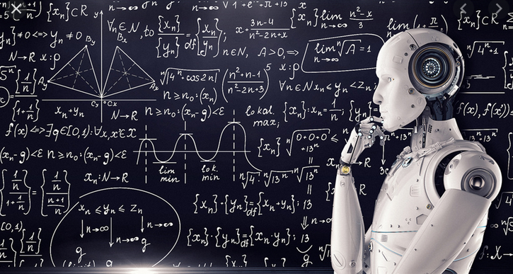

MACHINE LEARNING. ¿ALIADO O AMENAZA?

El campo del Machine Learning dentro de la Inteligencia Artificial es una realidad, está aquí, y ha llegado para quedarse.
Sin embargo, no sabemos nada de esta disciplina tan alienígena. De hecho, seguramente te abrume un sentimiento de fascinación o terror
cuando se te ocurre pensar en el alcance que puede llegar a tener una inteligencia creada por la humanidad, un sentimiento alentado por Hollywood y la
prensa sensacionalista. Es decir, te estás imaginando un Terminator corriendo hacia ti e intentando matarte. Bueno, quizás
no te estás imaginando exactamente eso, pero ya me entiendes.
A continuación vamos a ver que no nos perseguirá nuestro amigo Arnold casi con total seguridad, pero
sí que debemos prestar atención a estos puntos si no queremos tener problemas con esta tecnología que,
recordemos, ya es una realidad en nuestros días.
Algoritmos sesgados
Para que una Inteligencia Artificial (IA) aprenda mediante los mecanismos del Machine Learning, esa IA debe estar expuesta a una serie de datos
reales. A partir de estos datos, detecta patrones y genera una serie de 'leyes' que sigue para tomar sus decisiones. Hasta aquí te sonará,
¿verdad? Lo que probablemente no has pensado es que, si la IA aprende de la realidad de su entorno, puede aprender cosas que no queremos que aprenda.
Por ejemplo, imagina que enseñamos a una IA exponiéndola a datos de contratación de varias empresas (salarios, puestos de trabajo, adhesión al
convenio...) para que sea el sistema el que contrate automáticamente. Cuando lo ponemos a trabajar, asigna mayores salarios y puestos de
más responsabilidad a los hombres que a las mujeres. ¿Qué ha pasado?
Como hemos dicho, la IA aprende mediante Machine Learning a través de datos de la realidad. Si la realidad de la que aprende está sesgada, y tiene patrones
con tintes de machismo, racismo o cualquier tipo de prejuicio, lo aprenderá de igual manera, sin distinguir si es bueno o malo.
Por suerte, este es un problema conocido y los expertos ya ponen en marcha herramientas para evitarlo.
Cajas negras con responsabilidades
Al algoritmo al que se entrena con Machine Learning, se le denomina comúnmente 'caja negra', ya que de forma habitual se puede
entrenar el sistema ofreciéndole datos de entrada y de salida, sin la necesidad de comprender los entresijos que esconde esta tecnología.
Esto la hace tremendamente potente en cuanto a usabilidad, ya que no es necesario ser un experto matemático o estadístico para implementar un
aprendizaje automático.
Por contra, la creciente complejidad de los algoritmos de Machine Learning hace cada vez más difícil comprender qué
es lo que ocurre, con precisión, dentro de dichas 'cajas negras'. Este hecho, unido al de que casi cualquiera puede utilizar esta
tecnología, nos puede llevar a usos poco responsables que pueden desembocar en situaciones potencialmente peligrosas.
Como ejemplo, os dejo un artículo sobre el flash crash,
una caída sin precedentes que se produjo en Wall Street y que se dice que sistemas de IA entrenados con Machine Learning tuvieron mucho que ver.
Cambios disruptivos
Como ya puedes intuir, el potencial del Machine Learning es enorme. En mi opinión, es una tecnología que acompañará a la humanidad
a lo largo de su historia, provocando desde el medio plazo cambios con un impacto económico y social comparable, como mínimo, al impacto
que tuvo la revolución industrial. Muchos empleos, sobre todo aquellos que no demanden intuición, creatividad, o cualquier otra cualidad humana
que no pueda tener una IA, dejarán de tener sentido al no poder competir con una máquina. A día de hoy, por ejemplo, existen coches que circulan
de forma autónoma, sin conductor, y hay estudios que indican que la conducción autónoma será capaz de reducir drásticamente la cantidad de accidentes
de tráfico. Por consiguiente, muchos profesionales de los sectores del transporte y la logística perderán el empleo en el medio plazo. De la misma manera,
recepcionistas, gestores de rutas de tránsito o inversores, se verán superados en eficacia por una IA entrenada. Incluso con el llamado e-health,
la prevención de enfermedades hará que sean necesarios menos médicos.
Por otra parte, habrá menos enfermedad, menos accidentes de tráfico, menos trabajo perjudicial para la salud, y una cantidad innumerable de ventajas que
se podrán conseguir con una aplicación adecuada de la ética para el desarrollo de esta tecnología.
Será necesario tener en cuenta muy seriamente el impacto que tendrá - y está teniendo - el Machine Learning como campo de la Inteligencia
Artificial en la sociedad, si no queremos vivir crisis importantes derivadas del desconocimiento del alcance de esta tecnología.